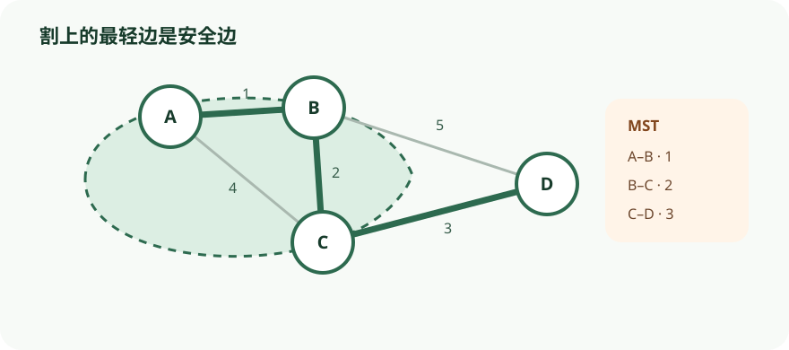

把 Prim 的当前顶点集合视作一个割，每次选边时同步验证割性质。
依据本地课程资料 lectures/chap5.pdf、dis06.pdf 重绘；交互用于解释算法状态与证明不变量，不替代正文中的完整论证。

CS170 · 第 6 讲
以 MST、集合覆盖、Huffman 编码等问题学习局部选择、交换论证和割性质。
在一组计算机之间建立网络，每对计算机之间可以铺设一条链路，每条链路的维护费用不同。我们希望挑选若干条链路，使得所有计算机连通，且总费用最小。
将计算机抽象为节点、潜在链路抽象为无向边、费用抽象为边权，问题就转化为：给定带权无向图 \(G = (V, E)\) 与边权 \(w_e\)，寻找一个边集 \(E' \subseteq E\)，使得 \(T = (V, E')\) 连通且总权重
\[\text{weight}(T) = \sum_{e \in E'} w_e\]
最小。这样的 \(T\) 称为最小生成树（Minimum Spanning Tree, MST）。
为什么最优解一定是树？因为如果解中包含环，根据性质 1——删除环上的任意一条边不会破坏图的连通性——我们可以删掉环上任意一条边，连通性保持不变，但总权重严格下降（或至少不增）。因此最优解不可能含环，它必须连通且无环，即一棵树。
树有三种等价刻画，它们从不同角度揭示树的结构简洁性：
性质 2：一棵 \(n\) 个节点的树恰好有 \(n - 1\) 条边。从空图开始逐条加边，每条边合并两个连通分量，总共需要 \(n - 1\) 次合并才能将 \(n\) 个分量合为一个。
性质 3：若连通无向图 \(G\) 满足 \(|E| = |V| - 1\)，则 \(G\) 是树。反证：若含环，不断删环边（由性质 1 保持连通），最终得到一棵树，边数仍为 \(|V| - 1\)，说明一条边都没删，故原图无环。
性质 4：无向图是树，当且仅当任意两节点间存在唯一路径。若存在两条不同路径，其并集必含环；反之，唯一路径意味着无环，且连通性由路径存在保证。
这三个性质互相等价，共同构成我们后续证明算法正确性的工具箱。
Kruskal 最小生成树算法采用最直观的贪心策略：从空图开始，反复选取权值最小且不会产生环的边加入解集，直到选出 \(n - 1\) 条边。
算法的正确性依赖于一个更一般的结论——割性质（Cut Property）。将顶点集 \(V\) 任意划分为 \(S\) 和 \(V \setminus S\)，称这样的划分为一个割（cut）。若边集 \(X\) 中没有任何边跨越该割，则跨越该割的所有边中权值最小的边 \(e\) 一定属于某个 MST，即 \(X \cup \{e\}\) 可扩展为某棵 MST。
割性质的证明：设 \(X\) 是某棵 MST \(T\) 的子集。若 \(e\) 已在 \(T\) 中，结论成立。否则将 \(e\) 加入 \(T\)，由于 \(T\) 连通，\(e\) 的两个端点间已有路径，加入 \(e\) 必产生一个环。该环必须包含另一条跨越割 \((S, V \setminus S)\) 的边 \(e'\)（否则环无法从 \(S\) 的一侧回到另一侧）。删去 \(e'\) 得到 \(T' = T \cup \{e\} \setminus \{e'\}\)。由性质 1，删环边保持连通；边数不变，故 \(T'\) 仍是树。又 \(e\) 是跨越割的最轻边，故 \(w(e) \leq w(e')\)，从而 \(\text{weight}(T') \leq \text{weight}(T)\)。\(T\) 已是 MST，所以 \(T'\) 也是 MST，且包含 \(X \cup \{e\}\)。
Kruskal 算法每一步选择连接两个不同连通分量的最轻边 \(e\)。以这两个分量之一为 \(S\)，则 \(X\)（已选边集）不跨越该割，\(e\) 是跨越该割的最轻边，由割性质知 \(e\) 属于某个 MST。因此 Kruskal 的每一步都是安全的，最终得到 MST。
考虑以下 6 节点图（边按权值排序后处理）：
| 边 | 权值 | 决策 |
|---|---|---|
| BC | 1 | 加入 |
| CD | 2 | 加入 |
| BD | 3 | 跳过（B、D 已连通，成环） |
| CF | 4 | 加入 |
| DF | 5 | 跳过（D、F 已连通） |
| EF | 6 | 加入 |
| AD | 7 | 加入 |
| AB | 8 | 跳过 |
| CE | 9 | 跳过 |
| AC | 10 | 跳过 |
最终选出的边为 BC、CD、CF、EF、AD，总权值 \(1 + 2 + 4 + 6 + 7 = 20\)，构成一棵生成树。每次加入的边都是连接两个分量的最轻边，由割性质保证其安全性。
Kruskal 算法需要频繁判断两个端点是否属于同一连通分量（find），以及在加入边后合并两个分量（union）。并查集（Disjoint Set / Union-Find）是支撑这两种操作的理想数据结构。
每个集合用一棵有向树表示，节点通过父指针最终指向根节点，根节点的父指针自环，作为该集合的代表元。makeset(x) 创建单元素集合，find(x) 沿父指针上行返回根，union(x, y) 合并两棵树。
按秩合并（Union by Rank）：合并时让秩（rank，可理解为树高的上界）较小的根指向秩较大的根。仅当两树秩相等时，新根的秩才加 1。这保证了树高被控制在 \(\log n\) 以内。关键性质：
秩为 \(k\) 的根节点至少有 \(2^k\) 个节点（由归纳法：秩 \(k\) 的根由两棵秩 \(k-1\) 的树合并而来）。
因此秩为 \(k\) 的节点至多 \(n / 2^k\) 个，最大秩不超过 \(\log n\)。
路径压缩（Path Compression）：在 find(x) 递归返回时，将路径上每个节点的父指针直接指向根。这几乎不增加单次操作时间，但长期来看大幅压低了树高。
路径压缩不改变根节点的秩（非根节点一旦失去根身份，其秩便固定不变），因此按秩合并的性质 1–3 仍然成立。
摊还分析：将秩值按区间 \(\{1\}, \{2\}, \{3,4\}, \{5..16\}, \{17..65536\}, \ldots\) 分组，共 \(\log^* n\) 组（\(\log^* n\) 是将 \(n\) 连续取对数直到 ≤ 1 的次数）。每个节点在退出根位置时按所在区间获得一笔"零花钱"，总额不超过 \(n \log^* n\)。每次 find 沿路径上行时，若某节点的父节点秩在同一区间，该节点支付 1 美元；由于每支付一次父节点秩就上升，一个节点最多支付 \(2^k\) 次就会被耗尽。跨区间的节点至多 \(\log^* n\) 个。因此 \(m\) 次操作的摊还代价为 \(O(m \log^* n)\)，几乎为常数。
结合排序的 \(O(|E| \log |V|)\)，Kruskal 总复杂度为 \(O(|E| \log |V|)\)；若边已排序或权值较小可线性排序，则瓶颈在并查集，优化后为 \(O(|E| \log^* |V|)\)。
割性质告诉我们：只要算法每一步都选择跨越某个割的最轻边，就一定是安全的。Kruskal 的视角是"全局选最轻边、避免成环"，而 Prim 算法（普里姆算法）则换了一种等价的贪心视角：维护一棵不断生长的树，每次选择连接这棵树与外部顶点的最轻边。
具体地，设 \(S\) 为当前树已覆盖的顶点集，\(X\) 为已选边集。每一步选取跨越割 \((S, V \setminus S)\) 的最轻边 \(e\) 加入 \(X\)，并将新顶点纳入 \(S\)。等价地，对每个不在 \(S\) 中的顶点 \(v\) 维护
\[\text{cost}(v) = \min_{u \in S} w(u, v)\]
每次选取 \(\text{cost}(v)\) 最小的顶点 \(v\) 加入树中，并用 \(v\) 的邻边更新其他顶点的 \(\text{cost}\) 值。
Prim 算法的伪代码与 Dijkstra 几乎相同，区别仅在于优先队列的键值：Dijkstra 中节点的键值是从起点到该节点的整条路径长度，而 Prim 中节点的键值是从当前树到该节点的最轻单一边权。二者因此具有相同的时间复杂度，取决于优先队列的实现（二叉堆 \(O(|E| \log |V|)\)，斐波那契堆 \(O(|E| + |V| \log |V|)\)）。
Prim 的正确性同样由割性质保证：每次加入的边都是跨越 \((S, V \setminus S)\) 的最轻边，而 \(X\) 不跨越该割，故该边属于某个 MST。
以 4 节点图为例，边权为 \(w(A,B)=1, w(A,C)=4, w(A,D)=3, w(B,C)=2, w(B,D)=5, w(C,D)=6\)，从节点 A 开始运行 Prim：
| 步骤 | \(S\) | 候选顶点 cost | 选取 | 加入边 |
|---|---|---|---|---|
| 0 | {A} | B=1, C=4, D=3 | B | AB (1) |
| 1 | {A,B} | C=min(4,2)=2, D=min(3,5)=3 | C | BC (2) |
| 2 | {A,B,C} | D=min(3,6)=3 | D | AD (3) |
| 3 | {A,B,C,D} | — | — | — |
最终 MST 边集为 \(\{AB, BC, AD\}\)，总权值 \(1 + 2 + 3 = 6\)。每一步都选取连接 \(S\) 与外部的最轻边，由割性质保证最优性。
在 MP3 等音频压缩方案中，信号经过采样、量化后得到长度为 T 的符号序列，最后一步需要将其编码为二进制。若符号表大小为 4，最直观的做法是给每个符号分配 2 位固定长度码字（如 00、01、10、11），总代价为 2T 比特。但当符号频率很不均匀时，这种定长编码浪费空间：我们自然希望高频符号用更短的码字，低频符号用更长的码字。
变长编码面临一个关键风险：解码歧义。若码字集合为 {0, 01, 11, 001}，则比特串 001 的解码不唯一。为此必须强制前缀无关性（prefix-free property）：任何一个码字都不能是另一个码字的前缀。
任何前缀无关编码都可以用一棵满二叉树（full binary tree）表示——每个节点要么有 0 个子节点、要么有 2 个子节点。符号位于叶节点，码字由根到叶的路径生成：向左为 0，向右为 1。解码时从根出发，逐比特向下移动，到达叶节点即输出对应符号并回到根。这种表示保证了解码的唯一性。
给定 n 个符号的频率 f₁, f₂, …, fₙ，我们的目标是找一棵编码树，使总编码长度最小。代价函数有两种等价表述：
按叶节点深度加权： \[ \text{cost} = \sum_{i=1}^{n} f_i \times \text{depth}_i \]
按节点频率求和（根节点除外）： 把每个内部节点定义为其所有后代叶节点频率之和（即该节点在编解码过程中被访问的次数）。每向下走一步就输出一个比特，因此总比特数等于树中所有叶节点和内部节点的频率之和，但根节点不计。
第二种表述有一个重要推论：频率最低的两个符号在最优树中一定是兄弟叶节点，位于最底层。否则把它们与树中最底层的符号交换就能降低代价。
由此引出霍夫曼编码（Huffman encoding）的贪心构造：每次取出频率最小的两个节点，合并为一个新内部节点（频率为两者之和），再把新节点插回优先队列。重复此过程直到只剩一个节点。伪代码如下：
procedure Huffman(f)
输入：频率数组 f[1…n]
输出：一棵有 n 个叶节点的编码树
用 f 建立小根堆 H
for i = 1 to n: insert(H, i)
for k = n+1 to 2n-1:
i = deletemin(H); j = deletemin(H)
创建编号为 k 的节点，以 i, j 为子节点
f[k] = f[i] + f[j]
insert(H, k)
若使用二叉堆实现优先队列，每次 deletemin/insert 耗时 O(log n)，共 O(n) 次操作，总时间复杂度为 O(n log n)。
以 T = 1.3 亿、字母表 {A, B, C, D} 的玩具例子为例，频率分别为：A = 7000 万，B = 300 万，C = 2000 万，D = 3700 万。
定长编码需要 2 × 1.3 亿 = 2.6 亿比特。我们用霍夫曼贪心策略建树：
得到的树结构（左 0 右 1）：
根（130）左子为 A，右子为内部节点（60）
节点（60）左子为内部节点（23），右子为 D
节点（23）左子为 B，右子为 C
码字：
A：0（1 位）
B：100（3 位）
C：101（3 位）
D：11（2 位）
总代价： \[ 70 \times 1 + 3 \times 3 + 20 \times 3 + 37 \times 2 = 70 + 9 + 60 + 74 = 213 \text{（百万比特）} \]
相比定长编码的 260 百万比特，节省约 18%。该树满足前缀无关性且解码唯一。
霍夫曼编码引出一个更深层的问题：一个概率分布究竟有多"随机"？可压缩性越低，随机性越低，可预测性越强。以三匹赛马为例，将每匹马的 200 场比赛记录编码为字符串，用霍夫曼算法计算所需总比特数：Aurora 需 290 比特，Whirlwind 需 380 比特，Phantasm 需 420 比特。Aurora 编码最短，因此最可预测。
设有 n 个可能结果，概率分别为 p₁, p₂, …, pₙ。从该分布中抽取 m 个样本（m 很大），第 i 个结果大约出现 m·pᵢ 次。为简化分析，假设 pᵢ 都是 2 的幂（形如 1/2ᵏ），可归纳证明（练习 5.19）霍夫曼编码的总长度为： \[ \sum_{i=1}^{n} m p_i \log \frac{1}{p_i} \]
因此编码单次抽取平均需要的比特数为： \[ H = \sum_{i=1}^{n} p_i \log \frac{1}{p_i} \]
这个量称为分布的熵（entropy），是衡量分布内在随机性的核心指标。
直观例子：
公平硬币：p = 1/2，熵 = 1/2·log 2 + 1/2·log 2 = 1 比特。一次抛掷恰好包含 1 比特的随机性。
偏置硬币（正面 3/4）：熵 = 3/4·log(4/3) + 1/4·log 4 ≈ 0.81 比特。偏置硬币更可预测，熵更低。
偏置越极端，熵越趋近于 0。
综上：更可压缩 ↔ 更不随机 ↔ 更可预测。
要让计算机展现智能，逻辑推理能力不可或缺。霍恩公式（Horn formula）是一种表达逻辑事实并推导结论的框架。
最基本对象是布尔变量（取值为 true 或 false）。一个文字（literal）是变量 x 或其否定 ¬x。霍恩公式中的知识由两类子句表示：
目标是判断是否存在一个对变量的真值赋值，使得所有子句同时满足——即满足赋值（satisfying assignment）。
两类子句"拉扯"方向相反：蕴含式推动某些变量为 true，纯负子句推动某些变量为 false。霍恩公式贪心算法（Horn formula greedy algorithm）采取"吝啬"策略：初始将所有变量设为 false，然后极不情愿地逐个将变量设为 true——仅当某个蕴含式即将被违背时才被迫行动。当所有蕴含式都满足后，再检查负子句。
输入：一个霍恩公式
输出：满足赋值（若存在）
将所有变量设为 false
while 存在未被满足的蕴含式:
将该蕴含式右端的变量设为 true
if 所有纯负子句都被满足: 返回当前赋值
else: 返回 "公式不可满足"
算法的正确性依赖于一个不变量：算法设为 true 的那些变量，在任何满足赋值中都必须为 true（因为我们只在被迫时才设 true）。因此，若 while 循环结束后负子句仍不满足，则不存在任何满足赋值。该算法可在公式长度线性时间内实现（练习 5.32）。
回到城镇建校问题：每个学校只能建在某个城镇，所有人必须在 30 英里内到达一所学校。对城镇 x，令 Sₓ 为 x 周围 30 英里内的城镇集合。问题转化为：最少需要多少个 Sₓ 才能覆盖所有城镇？这就是集合覆盖（set cover）问题。
形式化描述：给定基础集 B 和子集 S₁, …, Sₘ ⊆ B，选出最少数量的子集使其并集为 B。
贪心策略极其自然：每次选覆盖最多未覆盖元素的集合。
输入：基础集 B，子集 S₁, …, Sₘ
输出：覆盖 B 的子集选择
while 存在未覆盖元素:
选覆盖最多未覆盖元素的 Sᵢ
然而贪心并不总是最优！文中例子中贪心先选城镇 a（覆盖最多），再选 c、j、f/g，共 4 所学校；但存在仅需 3 所（b, e, i）的更优解。
尽管如此，贪心离最优并不远。设基础集有 n 个元素，最优解需 k 个集合。令 nₜ 为贪心执行 t 轮后仍未覆盖的元素数（n₀ = n）。由于剩余元素可被最优的 k 个集合覆盖，必有一个集合包含至少 nₜ/k 个未覆盖元素，因此贪心保证： \[ n_{t+1} \leq n_t - \frac{n_t}{k} = n_t\left(1 - \frac{1}{k}\right) \]
反复应用得 nₜ ≤ n₀(1 - 1/k)ᵗ。利用常用不等式 1 - x ≤ e⁻ˣ（等号当且仅当 x = 0 时成立）： \[ n_t \leq n_0\left(1 - \frac{1}{k}\right)^t < n_0 e^{-t/k} = n e^{-t/k} \]
当 t = k ln n 时，nₜ < n·e⁻ˡⁿⁿ = 1，即没有未覆盖元素剩余。因此贪心最多使用 k ln n 个集合，其近似比（approximation factor）为 ln n。在某些输入下该比值可以任意接近 ln n（练习 5.33），且在第 8 章将看到的复杂性假设下，多项式时间算法无法达到更优的近似比。
依据本地课程资料 lectures/chap5.pdf、dis06.pdf 重绘；交互用于解释算法状态与证明不变量，不替代正文中的完整论证。

两种算法都是贪心的，且正确性都源于割性质。Kruskal 选的是全局最轻且不成环的边；Prim 选的是跨越当前树割的最轻边。二者视角不同但等价，都能产生 MST。
路径压缩只改变非根节点的父指针，不改变任何节点的秩。一旦节点失去根身份，其秩便永久固定，因此按秩合并的性质 1–3 在路径压缩下仍然成立。
性质 3 要求图连通且有 n-1 条边才是树。仅有 n-1 条边但含多个连通分量的图是森林而非树。
不一定。虽然高频符号通常获得短码，但只有当某符号频率超过 2/5 时才保证存在长度为 1 的码字（练习 5.16）。码长取决于整体频率分布，而非单一符号的频率排名。
不正确。贪心只是近似算法。文中例子中贪心选了 4 所学校，但最优只需 3 所。贪心最多使用 k ln n 个集合（k 为最优解大小），这是其近似比。
问题：在 Kruskal 算法的某一步，已选边集为 X，下一个被加入的边 e 连接了当前的两个连通分量 T1 和 T2。以下哪一项是 e 属于某个 MST 的正确依据？
问题：关于并查集中按秩合并的性质，以下哪一项是正确的？
问题：在霍夫曼编码中，若用满二叉树表示前缀无关码，关于编码总代价的正确表述是：
问题：关于霍恩公式贪心（"吝啬"）算法，以下哪项是正确的？
lectures/chap5.pdf · 本段对应小节 · confidence: high · MST 形式化定义、树性质 1–4、割性质陈述与证明、Kruskal 与 Prim 算法描述、并查集按秩合并与路径压缩及摊还分析lectures/chap5.pdf · 本段对应小节 · confidence: high · 5.2 节从 MP3 编码引子出发，介绍前缀无关性、满二叉树表示、代价函数的两种等价表述、霍夫曼贪心算法及 O(n log n) 复杂度；Entropy 框给出熵的定义与硬币例子；5.3 节给出霍恩公式的两类子句与贪心满足性算法及不变量；5.4 节给出集合覆盖的贪心算法、ln n 近似比证明及不可近似性结论。